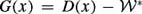

|
| |||||||||||||
|
|
||
Essentially, the bug algorithms have two behaviors: drive toward a point and follow an obstacle. The first behavior is simply a form of gradient descent of d(·, n) where n is either qgoal or an Oi. The second behavior, boundary-following, presents a challenge because the obstacle boundary is not known a priori. Therefore, the robot planner must rely on sensor information to determine the path. However, we must concede that the full path to the goal will not be determined from one sensor reading: the sensing range of the robot may be limited and the robot may not be able to "see" the entire world from one vantage point. So, the robot planner has to be incremental. We must determine first what information the robot requires and then where the robot should move to acquire more information. This is indeed the challenge of sensor-based planning. Ideally, we would like this approach to be reactive with sensory information feeding into a simple algorithm that outputs translational and rotational velocity for the robot.
There are three questions: What information does the robot require to circumnavigate the obstacle? How does the robot infer this information from its sensor data? How does the robot use this information to determine (locally) a path?
If the obstacle were flat, such as a long wall in a corridor, then following the obstacle is trivial: simply move parallel to the obstacle. This is readily implemented using a sensing system that can determine the obstacle's surface normal n(x), and hence a direction parallel to its surface. However, the world is not necessarily populated with flat obstacles; many have nonzero curvature. The robot can follow a path that is consistently orthogonal to the surface normal; this direction can be written as n(x)⊥ and the resulting path satisfies where ν is a basis vector in (n (c (t)))⊥. The sign of ν is based on the "previous" direction of
Consistently determining the surface normal can be quite challenging and therefore for implementation, we can assume that obstacles are "locally flat." This means the sensing system determines the surface normal, the robot moves orthogonal to this normal for a short distance, and then the process repeats. In a sense, the robot determines the sequence of short straight-line segments to follow, based on sensor information.
This flat line, loosely speaking, is the tangent (figure 2.14). It is a linear approximation of the curve at the point where the tangent intersects the curve. The tangent can also be viewed as a first-order approximation to the function that describes the curve. Let be the function that defines a path. Let x = c(s0) for a s0 ∊ [0, 1]. The tangent at x is . The tangent space can be viewed as a line whose basis vector is
The next step is to infer the tangent from sensor data. Instead of thinking of the robot as a point in the plane, let's think of it as a circular base which has a fine array of tactile sensors radially distributed along its circumference (figure 2.15). When the robot contacts an obstacle, the direction from the contacted sensor to the robot's center approximates the surface normal. With this information, the robot can determine a sequence of tangents to follow the obstacle.
Unfortunately, using a tactile sensor to prescribe a path requires the robot to collide with obstacles, which endangers the obstacles and the robot. Instead, the robot should follow a path at a safe distance from the nearest obstacle. Such a path is called an offset curve [381]. Let D(x)be the distance from x to the closest obstacle, i.e.,
| (2.4) |
|
To measure this distance with a mobile robot equipped with an onboard range sensing ring, we use the raw distance function again. However, instead of looking for discontinuities, we look for the global minimum. In other words, D(x) = mins ρ(x, s) (figure 2.16).
We will need to use the gradient of distance. In general, the gradient is a vector that points in the direction that maximally increases the value of a function. See appendix C.5 for more details. Typically, the ith component of the gradient vector is the partial derivative of the function with respect to its ith coordinate. In the plane, which points in the direction that increases distance the most. Finally, the gradient is the unit direction associated with the smallest value of the raw distance function. Since the raw distance function seemingly approximates a sensing system with individual range sensing elements radially distributed around the perimeter of the robot, an algorithm defined in terms of D can often be implemented using realistic sensors.
There are many choices for range sensors; here, we investigate the use of ultrasonic sensors (figure 2.17), which are commonly found on mobile robots. Conventional ultrasonic sensors measure distance using time of flight. When the speed of sound in air is constant, the time that the ultrasound requires to leave the transducer, strike an obstacle, and return is proportional to the distance to the point of reflection on the obstacle [113]. This obstacle, however, can be located anywhere along the angular spread of the sonar sensor's beam pattern (figure 2.18). Therefore, the distance information that sonars provide is fairly accurate in depth, but not in azimuth. The beam pattern can be approximated with a cone (figure 2.19). For the commonly used Polaroid transducer, the arcbase is 22.5degrees. When the reading of the sensor is d, the point of reflection can be anywhere along the arc base of length .
Initially, assume that the echo originates from the center of the sonar cone. We acknowledge that this is a naive model, and we term this the centerline model (figure 2.19). The ultrasonic sensor with the smallest reading approximates the global minimum of the raw distance function, and hence D(x). The direction that this sensor is facing approximates the negated gradient −∇ D(x) because this sensor faces the closest obstacle. The tangent is then the line orthogonal to the direction associated with the smallest sensor reading.
The tangent to the offset curve is (∇ D(x))⊥, the line orthogonal to ∇ D(x) (figure 2.14). The vector ∇ D(x) points in the direction that maximally increases distance; likewise, the vector −∇ D(x) points in the direction that maximally decreases distance; they both point along the same line, but in opposite directions. Therefore, the vector (∇ D(x))⊥ points in the direction that locally maintains distance; it is perpendicular to both ∇ D(x) and −∇ D(x). This would be the tangent of the offset curve which maintains distance to the nearby obstacle.
Another way to see why (∇ D(x))⊥ is the tangent is to look at the definition of the offset curve. For a safety distance , we can define the offset curve implicitly as the set of points where maps to zero. The set of nonzero points (or vectors) that map to zero is called the null space of a map. For a curve implicitly defined by G, the tangent space at a point x is the null space of DG(x), the Jacobian of G [410]. In general, the i, jth component of the Jacobian matrix is the partial derivative of the ith component function with respect to the jth coordinate and thus the Jacobian is a mapping between tangent spaces. Since in this case, G is a real-valued function (i = 1), the Jacobian is just a row vector DD(x). Here, we are reusing the symbol D. The reader is forced to use context to determine if D means distance or differential.
In Euclidean spaces, the ith component of a single-row Jacobian equals the ith component of the gradient and thus ∇ D(x) = ( DD(x))T. Therefore, since the tangent space is the null space of DD(x), the tangent for boundary-following in the plane is the line orthogonal to ∇ D(x), i.e., (∇ D(x))⊥, and can be derived from sensor information.
Using distance information, the robot can determine the tangent direction to the offset curve. If the obstacles are flat, then the offset curve is also flat, and simply following the tangent is sufficient to follow the boundary of an unknown obstacle. Consider, instead, an obstacle with curvature. We can, however, assume that the obstacle is locally flat. The robot can then move along the tangent for a short distance, but since the obstacle has curvature, the robot will not follow the offset curve, i.e., it will "fall off" of the offset curve. To reaccess the offset curve, the robot moves either toward or away from the obstacle until it reaches the safety distance . In doing so, the robot is moving along a line defined by ∇ D(x), which can be derived from sensor information.
Essentially, the robot is performing a numerical procedure of prediction and correction. The robot uses the tangent to locally predict the shape of the offset curve and then invokes a correction procedure once the tangent approximation is not valid. Note that the robot does not explicitly trace the path but instead "hovers" around it, resulting in a sampling of the path, not the path itself (figure 2.20).
A numerical tracing procedure can be posed as one which traces the roots of the expression G(x) = 0, where in this case . Numerical curve-tracing techniques rest on the implicit function theorem [9, 232, 307] which locally defines a curve that is implicitly defined by a map  . Specifically, the roots of G locally define a curve parameterized by . See appendix D for a formal definition.
. Specifically, the roots of G locally define a curve parameterized by . See appendix D for a formal definition.
For boundary following at a safety distance , the function G(y, λ) = D(y, λ) − implicitly defines the offset curve. Note that the λ-coordinate corresponds to a tangent direction and the y-coordinates to the line or hyperplane orthogonal to the tangent. Let Y denote this hyperplane and DYG be the matrix formed by taking the derivative of with respect to the y-coordinates. It takes the form DYG(x) = DY D(x) where DY denotes the differential with respect to the y-coordinates. If DYG(y, λ)is surjective at x = (λ, y)T, then the implicit function theorem states that the roots of G(y, λ) locally define a curve that follows the boundary at a distance as λ is varied, i.e., y(λ).
By numerically tracing the roots of G, we can locally construct a path. While there are a number of curve-tracing techniques [232], let us consider an adaptation of a common predictor-corrector scheme. Assume that the robot is located at a point x which is a fixed distance away from the boundary. The robot takes a "small" step, Δλ, in the λ-direction (i.e., the tangent to the local path). In general, this prediction step takes the robot off the offset path. Next, a correction method is used to bring the robot back onto the offset path. If Δλ is small, then the local path will intersect a correcting plane, which is a plane orthogonal to the λ-direction at a distance Δλ away from the origin.
The correction step finds the location where the offset path intersects the correcting plane and is an application of the Newton convergence theorem [232]. See appendix D.2 for a more formal definition of this theorem. The Newton convergence theorem also requires that DYG(y, λ)be full rank at every (y, λ)in a neighborhood of the offset path. This is true because for . Since DG(y, λ) is full rank, so must be DYG(y, λ)on the offset curve. Since the set of nonsingular matrices is an open set, we know there is a neighborhood around each (y, λ)in the offset path where DG(y, λ)is full rank and hence we can use the iterative Newton method to implement the corrector step. If yh and λh are the hth estimates of y and λ, the h + 1st iteration is defined as
| (2.5) |
|
where DYG is evaluated at (yh, λh). Note that since we are working in a Euclidean space, we can determine DYG solely from distance gradient, and hence, sensor information.
|
|
||
|